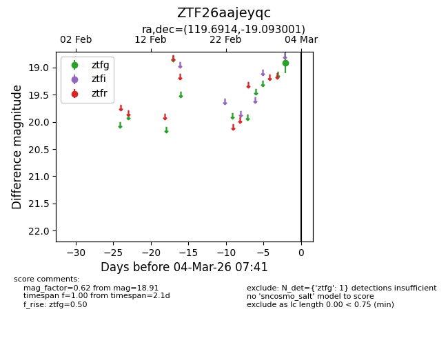
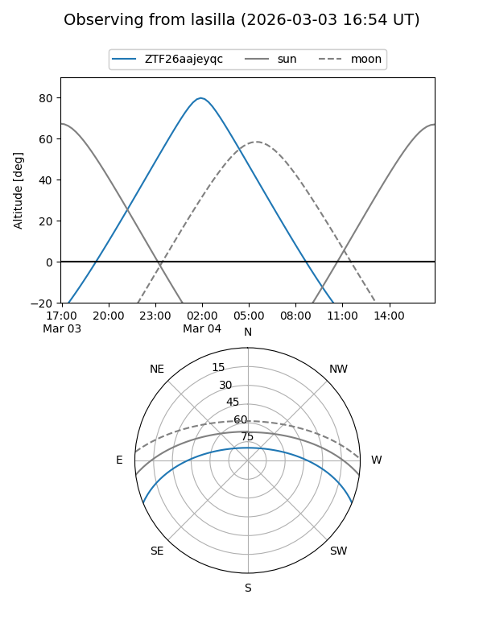
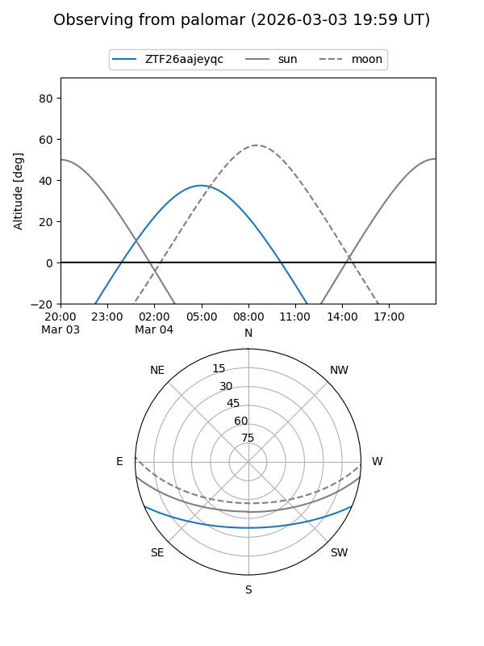

ZTF26aajeyqc
Target ZTF26aajeyqc at 2026-03-04 07:42
Aliases and brokers:
FINK: link
Lasair: link
ALeRCE: link
alt names
ZTF26aajeyqc (ztf,fink_ztf)
Coordinates:
equatorial (ra, dec) = 119.6914,-19.09300
equatorial (HMS+DMS) = 07:58:45.94,-19:05:34.80
galactic (l, b) = (237.6249,+5.41560)
Flags:
Photometry:
last ztfg=18.91
1 ztfg detections
Lightcurve

Visibility


Additional plots